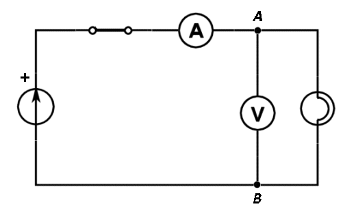

Numim rezistenţă electrică a unui corp mărimea fizică
scalară calculată prin împărţirea tensiunii aplicată corpului la intensitatea curentului electric care se stabileşte
prin acesta (figura 1−1):
Numim rezistenţă electrică a unui corp mărimea fizică
scalară calculată prin împărţirea tensiunii aplicată corpului la intensitatea curentului electric care se stabileşte
prin acesta (figura 1−1):

Producerea şi utilizarea curentului continuu |
Legile circuitelor electrice |
B-1. |
Rezistenţa electrică |
Aplicând o tensiune de câţiva volţi la capetele filamentului unui bec de lanternă, intensitatea curentului prin acesta este de câteva sute de miliamperi. Cu toate că la un capăt al filamentului sunt electroni în exces, aceştia nu trec instantaneu prin filament - ritmul trecerii electronilor este limitat. Filamentul becului "opune rezistenţă" trecerii purtătorilor de sarcină electrică.
Numim rezistenţă electrică a unui corp mărimea fizică
scalară calculată prin împărţirea tensiunii aplicată corpului la intensitatea curentului electric care se stabileşte
prin acesta (figura 1−1):
| Figura 1−1. Descrierea cantitativă a rezistenţei electrice a unui corp. |
Unitatea de măsură pentru rezistenţa electrică, în Sistemul Internaţional, este  ,
numită ohm (simbol Ω).
,
numită ohm (simbol Ω).
 Provocarea 1-1
Provocarea 1-1
Cât este rezistenţa electrică a filamentului unui bec de lanternă atunci când la capetele sale este aplicată tensiunea 3,5 V, iar intensitatea curentului care se stabileşte prin filament este 0,20 A?
Electronii aflaţi în exces într−un capăt al filamentului, se resping reciproc şi sunt totodată atraşi de ionii pozitivi aflaţi în exces în celălalt capăt al filamentului.
Sub acţiunea acestor forţe electrice, electronii sunt acceleraţi în interiorul filamentului, câştigând viteză. Dacă nu s−ar opune nimic mişcării accelerate a electronile, aceştia ar dobândi curând viteze enorme.
Provocarea 1-2
Masa unui electron este 9,1·10-31 kg. Cât este viteza dobândită de un electron, aflat iniţial în repaus, accelerat între două puncte între care tensiunea electrică este de un volt?
În filamentul metalic al becului, electronii nu se pot mişca liber - aceştia vor ciocni frecvent ionii metalului, pierzând de fiecare dată viteza dobândită în scurtele perioade de accelerare dintre ciocniri.
Situaţia este asemănătoare cu cea a particulelor mici de praf aflate în atmosferă. Chiar dacă atracţia gravitaţională din partea Pământului accelerează aceste particule în jos, datorită ciocnirilor frecvente cu moleculele aerului, viteza medie de cădere a particulelor devine constantă şi foarte mică.
 Activitatea experimentală 1-1
Activitatea experimentală 1-1
Investighează rezistenţa electrică a filamentului unui bec de lanternă pentru diferite tensiuni electrice aplicate acestuia. Lucrează în echipă.
Pasul 1. Conectaţi la bornele becului un multimetru setat pentru măsurarea tensiunii şi, în serie cu această grupare, un multimetru setat pentru măsurarea intensităţii curentului, conform schemei din figura 1−2.

Figura 1-2. Schema circuitului pentru determinarea rezistenţei electrice a filamentului unui bec.
Pasul 2. Aplicaţi între bornele A şi B tensiuni în intervalul 1...5 V. Folosiţi pentru aceasta un generator de tensiune variabilă sau, în lipsa acestuia, baterii formate prin înserierea unui număr variabil de celule.
Pasul 3. Transcrieţi pe caiete tabelul 1−1 şi completaţi−l cu rezultatele măsurătorilor şi calculelor efectuate.
Tabelul 1-1. Rezultatele măsurătorilor şi calculelor efectuate.
| Nr. det. |
U (V) |
I (A) |
R (Ω) |
| 1 | |||
| ... |
Pasul 4. Reprezentaţi grafic intensitatea curentului care se stabileşte prin circuit în funcţie de tensiunea aplicată la bornele becului. Există o relaţie simplă între aceşti parametri electrici?
Pe măsură ce creşte tensiunea aplicată becului, este din ce în ce mai mare energia degajată sub formă de căldură şi lumină la trecerea prin filament a fiecărui coulomb de sarcină electrică − temperatura filamentului este din ce în ce mai mare.
Agitaţia termică sporită a ionilor îngreunează şi mai mult trecerea electronilor, astfel că rezistenţa electrică a filamentului creşte pe măsură ce creşte temperatura acestuia.
Aşadar, relaţia dintre tensiunea aplicată becului şi intensitatea curentului care se stabileşte prin acesta nu este tocmani simplă!